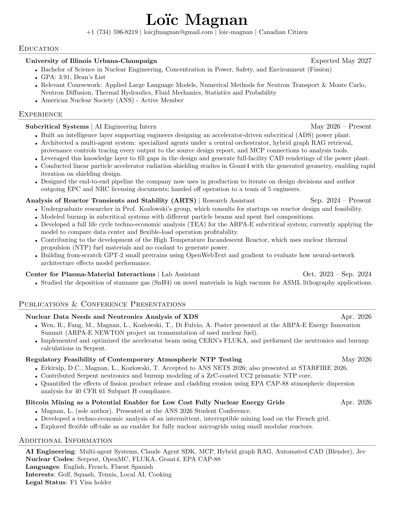

Loïc Magnan - Engineer
A silent film made from the reactor visualization. Neutron paths use recorded OpenMC positions at the model's original scale; particle size and time are adjusted for visibility.
CV
PDF


A silent film made from the reactor visualization. Neutron paths use recorded OpenMC positions at the model's original scale; particle size and time are adjusted for visibility.
